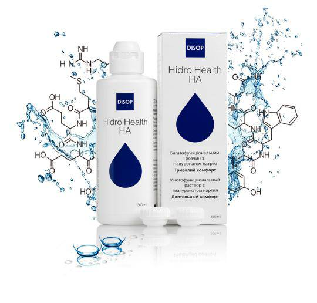

Чому Hidro Health HA найбільш повне багатофункціональне рішення на ринку?
Hidro Health HA – це універсальний розчин з гіалуроновою кислотою для всіх типів м’яких контактних лінз, включаючи силікон-гідрогелеві лінзи. Використовується для дезінфекції, очищення, зволоження, промивання і видалення білка. Поставляється з антимікробним контейнером для лінз Hidro Health HA Поставляється з антимікробним контейнером для лінз

- Збільшений комфорт, оптимальне зволоження Містить гіалуронову кислоту найвищого рівня очищення та найбільшої концентрації на 70% більше, ніж інші розчини
- Ефективний відносно ліпідів Завдяки профілактичній дії гіалуронової кислоти та коригуючій дії полоксамеру.
- Видаляє білкові відкладення Містить цитрат – очищуючий агент білка.
- Оптимальна переносимість Фізіологічний ізотонічний розчин має такий самий показник рН, як і сльоза.
- Універсальний Для всіх типів м’яких контактних лінз, в тому числі силікон-гідрогелевих лінз.
- Безпечний Разом з розчином в комплекті міститься антимікробний контейнер для зберігання лінз, що запобігає росту мікробів та винекнинню біоплівки